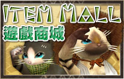
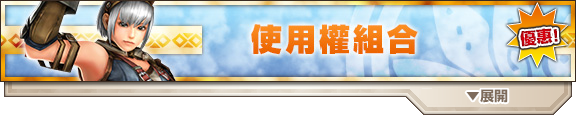
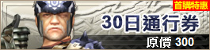
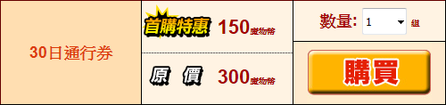
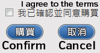

As depositing money is now impossible, most of the below about points cannot be carried out.
Like many games and services Monster Hunter Frontier uses a Point system, these are commonly referred to as either simply Points or MH Coins. 100 Points or Coins is the direct equivalent of 100 Taiwan Dollars which converts to around $3.15/€2.80/£2.40 (as of August 2016).
Using the store is simply a case of using your preferred method to add the store's currency and then purchasing whatever you want from the individual pages of the various items and subs on sale.
You can buy MyCard Points Codes from various sites, the following sites stock MyCard Codes:
OffGamers
OffGamers are officially supported by MHF TW and have even had promotions previously where you get in game items for buying their MyCard codes. OffGamers has a ranking system which causes prices to go down as you buy codes, with prices ending up decently under the actual exchange rate for TWD.
SEA Gamer Mall
SEA GM are decently priced and sell codes specifically for TW and HK regions. Their codes cost slightly above the exchange rate after processing fees with paypal rather than below and still slightly under if you use WebMoney as a payment option. Higher processing fees than OffGamers but should be guaranteed to work.
CN-USA
CN-USA are pretty expensive and their storefront is a lot less than smooth to use in general, but their cards are explicitly TW branded and work fine with MHF TW. Not recommended due to the price.
Codes purchased on any other similar site will most likely work, but these are the only ones I have personally used on MHF TW.
The below is not fully accurate to the modern payment method.
One button now
Choose value to deposit
Get redirected to MyCard site
點數卡 for prepaid cards
全球支付區 for direct paypal payment
Process:
1. Purchase a MyCard Points code
2. Go to the Capcom Billing Site and sign in.
3. Click on the big Monster Hunter Frontier Z image.
4. Click on the second MyCard link.

5. Enter your card details as you were provided. The first text box is for the Card Number or Code (卡號) and the second is for the Card Password (密碼).
6. Hit the button below the text boxes to redeem the points.
7. You can visit this page and choose the 一百八十天內 option to view all points added in the last 180 days, this serves to verify you have the points.
A video guide for the process above can be viewed here if you need it.
You can add money directly using PayPal, this will cost you the exact value of points purchased in TWD (e.g. 300 points = 300 TWD) as converted via paypals exchange rates. However this may not work in all countries as it requires a verified PayPal account.
Process:
1. Go to the Capcom Billing Site and sign in.
2. Click on the big Monster Hunter Frontier Z image.
3. Click on the first MyCard link.

4. Choose the total number of points you want, 300 points is required for a 30 day subscription.
(This is also your price in TWD, 100 TWD is roughly £2.20/€3.00/US$3.20).
5. Scroll down, find the PayPal option with a Capcom 30th Anniversary logo and click it. This is written plainly in English.

6. You will be redirected to the MyCard Billing site. Enter your E-Mail in the appropriate box and tick the Agreement box. Ignore the rest of the options and press Next, the next page will confirm your transaction details, hit the Submit button and you will be taken to the PayPal site.
7. Pay with PayPal as you would for anything else, as stated this does require a verified PayPal account.
8. You will be returned to the MyCard site which will process your payment and then return you to the MHF-Z site where you will see a message confirming your points have been added.
9. You can visit this page and choose the "一百八十天內" option to view all points added in the last 180 days, this serves to verify you have the points.
Unlike the above options, you do not need to redeem a mycard password or code, the points are simply added directly into your account to be spent on the actual store.
Process:
1. Visit the Item Mall store front and find your desired item or subscription, a guide to the various sections can be found below.
2. Click on the item you want after locating it and you will be brought to a page telling you pricing details and what you will get from the purchase.

3. Log in when prompted to and you will be directed to a page telling you what you will get from the purchase, how many points you have and how many will be left in your account.
4. Hit the "I agree" tickbox followed by the buy button (購買).

1. If you have purchased something like a Premium Kit or other item that you will need to collect the item. Go to the Purple Guildie at the town entrance and choose 'Receive Items' followed by 'Purchased Items', if you get a warning message you likely need to make space for items in your box.

2. If there is a promotion on you may also need to repeat the 'Receive Items' steps and select the 'Event Items' or 'Promotional Items' options to receive extra items.
You need a PSN account from Taiwan, Hong Kong, Singapore or Malaysia to actually subscribe.
PSN accounts do not work on PC and vice versa. If you want to use High Grade graphics etc. don't bother with PSN.
PS3 and Vita players need to purchase MH Coins using the PSN store, this means you need an account in a suitable Asian region and prepaid PSN codes for said store as they will not accept international credit cards from other regions.
A guide for the subscription process on PSN can be found here, the process is specifically for the PS3 but Vita should be extremely similar.
Use the above information to add points using your preferred method and then on the main site access the Item Mall

From here click on the Subscriptions Section banner to show all subscription types

Click on the 30 Day Subscription box

Click the big yellow button with red text and log in on the next screen

The next page will give you a summary of what you are buying, show you how many points you'll have left and ask you to accept terms and confirm your purchase.

You will be subscribed after this. If you managed to ignore the images and buy 1 day premium because it was listed as 300 points you will have that instead.

There are a couple of types of subscription available but these can basically be broken down into the Main subscription and Premium Courses.
Be sure to actually read what you are buying! both the NetCafe Course and the basic 30 Days Core Subscription cost the same!
Subscriptions are basically time blocks, if you buy 30 days you will immediately have an expiry date set 30 days later. You can stack these subscriptions without issue. If you bought 30 days of sub and 2 days of premium you would end up with 2 Days of Premium Courses and 32 Days of the Main Subscription, likewise two sets of 30 days would add 60 days to your total subscription time.
Subscriptions are non-recurring, you must manually buy time each month unless you decide to buy multiple months up front. You do not lose progress if you don't stay subscribed, you simply can't do any content that needs a subscription.

This is not premium. This is required to play the game proper!
The Main Subscription (30日通行券) is what is needed to play the game proper. It includes the Hunter Life and EX courses.
Hunter Life gives access to all non-premium quests. This is required to take the vast majority of quests in the game. You will need this to rank up to HR5 and beyond and to participate in events.
EX course gives you access to all the extra functions in town including town boxes, buying extra items in the store such as Honey, Energy Drinks and Power Seeds and a bunch of Caravan convenience features.
You can't buy a one month subscription and then continue doing HR5+ content after it expires! If you do not have an active subscription you are still restricted to content of HR4 or lower even if you are HR5 or at maxed out G Rank!
This course costs around $9.90 a month with the first month being half price! Exchange rate based on April 2017.


This is premium and is completely optional!
The Premium Course (1日暢遊券 or 7日狩魂燃燒券) is a single day that includes all of the various Premium Courses from the Japanese version of the game.
This can be bought as either a single day (1日暢遊券) or as a pack of 7 Days (7日狩魂燃燒券). The prior option includes 24 hours of each course including the Core Subscription while the latter includes only the VIP parts, with 7 day you will need to already be subscribed to get the most benefits.
There are a couple of different flavours of Premium or VIP courses, ultimately all are for the same purpose which is to advance through the game's ranks or to get items without needing to invest as much time to do so.
Premium (and a certain Caravan Gem Skill) makes it so if you carve the most common material on something that can be carved there is a chance to reroll it, this removes the rerolled item from the pool making all the lower % items more common. This is not necessarily always a benefit if you actually want the most common carve but is estimated to be around 10% chance at best.
| Reroll Mechanic | |
| Normal Monoblos | Rerolled Monoblos |
| 50% 一角龍的偉殼 | Removed |
| 46% 一角龍的偉甲 | 92% 一角龍的偉甲 |
| 3% 深紅之角 | 6% 深紅之角 |
| 2% 深紅的豪角 | 2% 深紅的豪角 |
Legendary Rastas are powerful AI Companions who are available if you are on a Premium Course, these do not disappear like other AI companions and will actively ignore attacks by monsters and simply infinitely attack them.
To get a Legendary Rasta to accompany you, simply enter the bar and choose the 3rd option on them followed by confirming your choice. You can only have one Legendary Rasta at each time but can freely swap it with another while you have VIP.

After you have them contracted new options will appear to control what items they use on quests (Throwing Knives, Powders, Flutes) and what Weapons they are using.

The NetCafe Course (1日恩典暢遊券) also known as Super VIP or the Grace Course is an enhanced version of the above premium course. It is mostly identical to the above but it has higher multipliers, comes with a large amount of N Points and gives materials to make special headpieces.
The item set gives a number of items that are functionally unavailable outside of getting them as a Guild Daily Reward. These include Starving Wolf pots which instantly push you down to 25 Maximum Stamina. It is notable that you can claim these per character slot meaning if you have 3 characters you would get 3 days worth of the items for the day assuming you logged in on all characters to claim them. This is still pretty poor in terms of 'buying items' but is nice as a fre bonus.
The most notable part of this course is the N Points given. Some of the strongest gear is NetCafe equipment that uses thousands of N Points. It is not recommended to buy this course for N Points unless you are very wealthy or it is simply on an event where you get 3,600 N Points instead of 1,200. Typically you will need around 52,000 N Points to make an N Point weapon usable and around 73,600 to get it to Lv49 G Finesse. The final upgrade is generally not worth doing unless you really want to drop the points for marginal DPS as it costs 9,900 alone.
As you might have gathered, these are basically whale weapons.

The NetCafe Boost Course (1日恩典增幅暢遊券) also known as Ultra VIP or the Grace Boost Course is a further enhanced version of the NetCafe course. It's mostly the same as the above but comes with additional fixed GRP, more N Points, a crutch skill similar Great Guts and access to two legendary rastas.
Like normal NetCafe, the most notable part of this course is the N Points given. It is recommended to only buy this course for N Points while the event where you get 5,700 N Points instead of 3,300 is live.
Soul Resurgence is very similar to a Great Guts Ticket, it can proc once a quest and will save you and recover you to maximum health regardless of what HP you were on when it triggered. This can still fail to save you however on some multihit attacks such as Zinogre's nuke.

A combination of Pugi Cuff and Pugi Outfit are the Frontier equivalent to Talismans or Charms, cuffs are basically decorations to slot into the outfits to give skill points.
A Pugi can be obtained after HR50 from the Pugi farm (see House and AI Companions) and the G Cuffs require you to be GR50 in G Rank and to have purchased a G Cuff License for 60P. In Total you will need to spend 120P to use a G Rank cuff on your pugi.
Premium Pugi Cuffs require the purchase of a Premium Outfit to be used.
If you don't want to wait the required days to get a Pugi and a Departure Facility, buying a G Aid Package will give you 60P which is enough to obtain everything required to use Cuffs and Outfits. Simply doing Hunter Navigation achievements should mean you do not need to do this and buying it is not recommended unless you want to get the G Rank Cuff license quickly after hitting G Rank.
| Any Premium Pugi Outfit is required to utilise Premium Cuffs | |
| Premium Pugi Outfits (技能鈕扣P組合) |
Previews of these outfits are here and they match the list of outfits in order from top left to bottom right (e.g. Fisherman first, Paria second, Gospel outfit third, Ham Shank fourth, Rainbow fifth etc.) |

| Premium Cuffs can only be slotted into Premium Outfits | |
| Premium Pugi Cuff I Tickets (技能鈕扣P組合) |
The first set of premium cuffs, allows you to craft 1x PA, 2x PB and 5x PC cuffs from the first Pugi Cuff package.For actual available cuffs, check the Smith and the ticket the Cuff uses or check MHSX2G. |
| Premium Pugi Cuff II Tickets (技能鈕扣PII組合) |
The second set of premium cuffs, allows you to craft 1x ⅡPA, 2x ⅡPB and 5x ⅡPC cuffs from the first Pugi Cuff package.For actual available cuffs, check the Smith and the ticket the Cuff uses or check MHSX2G. |
| Premium Pugi G Cuffs (G技能鈕扣P組合) |
The only set of premium G cuffs, allows you to craft 1x PA, 2x PB and 5x PC G Rank level cuffs, there is only one set of G Rank tickets thus this enables you to craft any found in the G Rank Premium Sections.For actual available cuffs, check the Smith or MHSX2G |
Premium Kits are basically sets of equipment that you can only obtain by purchasing their individual kit. Most kits come with the materials to make 2 Armour Sets with the intention being you can craft one Gunner and one Blademaster.

Kits do not include materials to upgrade the equipment they contain. Materials will need to be farmed just as with upgrading any normal set.
G Rank upgrades require G Tickets which are included in some premium kits and not others. These can be obtained by simply buying them or through exchanging tickets most premkits give on the combiner if you have them.
The Weapons in Premium Kits are generally only suitable at early G Rank, do not buy a kit expecting to see long term use out of the weapons within! G Rank is still required to craft Premium Kit Tonfas, you cannot pay to use them earlier.
All Zenith Level premium Weapons and Armour pieces need GR200 Zenith Hypnoc Materials. The material needed is very common and only required in small amounts but still acts as a barrier on maxing pieces until you hit GR200.
Stats on some of these Kits can be found here. This rates them based on the ZP versions of the sets, GP version of Asteli, Carrol and Lien are lacking.
In terms of maximum utility the 10th Anniversary kit outshines literally every other Premium Kit simply by virtue of containing 13 sets with relevant meta skills. The pieces from the 10th Anniversary set are actively still used by even high end minmaxing time attack players throughout all of Z2 and likely into Z3 unless there is an unforeseen meta shift.
10th Anniversary Kits >>> Lien > Pelegri Heads = Duremudira Sets >> Carrol >>Asteli = Z1 > Magisa > Pelegri Others > Shaln |
Some kits are incredibly niche, the Pelegri Headpieces for example are perfectly suited to Gunlancing and Great Sword use but that is their only real use case. The use case for GS is also reduced with Gore pieces and the 10th Anniversary Sets existing. Magisa similarly is only for use on the Hunter's Road as a way to get All Res UP+20 with no real other purpose or niche.

| 10 G Tickets (G強化券10張 ) |
G Tickets are used to upgrade the various Premium Kit weapons and armour to G rank level, some premium kits include a number of them, some do not. Check if you need them before you buy them but keep in mind no premium kit comes with enough to push everything to G Rank. |

Item Packs or Aid Packages are functionally just packages of consumable items that cost far too much to be a sensible purchase. The exception is the G Aid Package which contains 90P which is enough to immediately get a G Pugi Cuff License at G Rank if you are lacking points (or can be functionally converted to 9,000 GCP if you want to pay for those points).
Lotteries (or Gachapon) are pretty much exactly what you'd expect from the term, you gamble for items using coins. These lotteries can have vastly differing odds but are generally primarily for Armour that is catered to the current meta at the time of release.
Outside of Armour you can also roll various consumables, weapon materials and N Point items. The consumables include things such as Superior Tickets which allow acccess to incredibly good quests with preset rewards and special G2 pots that fully fill your HP bar. N Point items are incredibly rare on most lotteries but typically are limited to N Blocks, items used to upgrade the first version of a number pieces of NetCafe equipment. Weapons are pretty much globally bad, there are special lotteries for Evolution weapons that are extremely good but they require the same number of Raviente Gems to be maxed as standard ones, meaning hundreds of hours of grind.


There are two different types of lottery, Step Up or Lottery G and standard lotteries, these both use same Coins to be rolled for. You can buy various packs of coins ranging from only 1 to 170 coins, this makes the price per coin vary depending on how many you are willing to buy.
Collaboration Lotteries (Madoka, Evangelion, etc.) always use their own unique types of coins. You cannot buy standard Lottery G Coins and use them to roll for things such as the Evangelion Lotteries. Note that internal capcom collaborations do not have to follow this rule. The Breath of Fire collaboration for example simply used standard coins to be gambled for.
| Lottery Coins | |
| Lottery G Ticket (摺扇貓的金閃閃小判G X張) |
A standard and Step Up lottery ticket, can be redeemed at the lottery cat in the blacksmith. Potential rewards and Step Up progression can be found here |
| Evangelion First Lottery Ticket 人類補完計畫書 X張) |
A ticket for the second series Evangelion Step Up lottery, can be redeemed at the lottery cat in the blacksmith. Potential rewards and Step Up progression can be found here and the associated equipment details are on this page. Gives Rei and Shinji themed items. |
| Evangelion Second Lottery Ticket (ＮＥＲＶ極秘資料 X張) |
A ticket for the second series Evangelion Step Up lottery, can be redeemed at the lottery cat in the blacksmith. Potential rewards and Step Up progression can be found here and the associated equipment details are on this page. Gives Asuka and Kaworu themed items. |
The standard lottery coins can only ever be used for their specific lottery, these can be spent by talking to the Lottery Cat in the blacksmith and simply choosing the Standard Lottery option:
After selecting your desired lottery you can hit  /
/  / Z on keyboard to see the odds of each individual prize.
/ Z on keyboard to see the odds of each individual prize.
The Step Up lottery is a bit more complex than the standard lottery, it has a linear step progression that resets each day at 12:00 TW time. Each step gives a different number of lottery rolls and a different type of extra rewards.
After selecting the Step Up lottery you will be brought to the page where you can spend coins to upgrade steps and gamble, each Step's page will display the number of coins used for that step as well as the number of lottery rolls and any extras you will be granted. You can hit / / Z on keyboard to see the odds of each individual prize.

Because the steps reset each day, you will need to put in a lot of coins at once if you want to hit the higher steps. In order to work out the best returns on coins you can check this calculator which automatically presents all rewards and allows for direct comparison of multiple steps vs. doing a single higher step etc.
Generally speaking going higher than Step 2 will always actively start wasting coins. Doing Step 3 across multiple days is always going to get you more rolls than wasting more coins on higher steps.
Newer lotteries ocassionally have additional armour type tickets attached to Step 6, if you want this armour it is pretty much the only time it's worth going this high. Do note however that these armours are usually whale fodder and a will cost you between $60 and $200 per finished piece.
After actually gambling you can claim any rewards in the Rewards Storage option, this will have a red exclamation mark if there are items in it.
Lottery coins are account wide and can be viewed at any time on the Guild Card of any character you have on your account.

If you have multiple Characters on your account, each character has individual Step Up lottery steps you can do every step up to three times without having to wait for a reset. If a lottery is time limited and you have multiple characters it is definitely wise to use them to do multiple of Steps 1 to 2 instead of pushing to Step 6 multiple times. Obviously this requires an initial investment of 200 TWD but is still less than even a month's subscription.
Without multiple characters on your account the actual best way to save coins is to simply minimise the number of steps you do. You can view the expiration date of most lotteries on the main lottery page which allows you to work out how much time you have. For example with the typical lottery rolls to coin ratio doing Step 6 will use 80 coins.
Frontier Points are yet another type of point in the game, you get these either by going to higher Steps in a Step Up lottery or by cashing in various tickets for premium equipment.
It is not advisable to convert the Armour Tickets if you suspect you may ever want to use them, but for the most part the weapons you can gain are poor and thus can be converted without issue. Weapon Tickets are converted into 1FP each and Armour Tickets into 3FP.
| Item | FP Cost | Description |
| 結雲生產券 | 500FP | Yukumo Exotic Armour ticket (Great Luck) |
| 蟲甲笛生產券 | 300FP | Bnahabra Violin HH ticket |
| 奇面生產券 | 300FP | Cha-Cha and Kayamba DS ticket |
| 鯊魚生產券 | 300FP | Shark Warning Lance ticket |
| 吹吹茶釜生產券 | 300FP | Felyne Blowgun LBG ticket |
| ＦＰ紋章生產券 | 10FP | FP Sigil Ticket |
| 鍬鳳生產券 | 500FP | Rhopessa Exotic Armour ticket (Status Attack Up) |
| 啾咕生產券 | 300FP | Tri SnS ticket |
| 雷帝錘生產券 | 300FP | Gaiasp Hammer ticket |
| 玉米砲生產券 | 300FP | Corn Gunlance ticket |
| 強狩獵弓生產券 | 300FP | Arca Raptora Bow ticket |
| 公會學識生產券 | 500FP | Guild Exotic Armour ticket (Wide Area+3) |
| Ｗ噬者生產券 | 300FP | Windeater LS ticket |
| Ｂ新星生產券 | 300FP | Great Meteor HBG ticket |
| 熔岩烈生產券 | 300FP | Vulcanis GS ticket |
| 劍魚生產券 | 300FP | Hairtail's Hairblade ticket |
| 秘擊玉 | 1FP | 2x Raviente 100 G Gem |
| 強狩獵弓生產券 | 300FP | Arca Raptora Bow ticket |
FP Sigils seem biased to roll the various individual weapon tech change and boost skills and have 75% chance of attack, affinity or elemental buff rolls. You need 17,528 Raviente gems for a Lv100 HR5 weapon. This does not cover G rank upgrades and the gems can't be used for them. It is mostly not worth spending FP on these. | ||
You only need a single ticket to max out any single Exotic piece. This means you need 2,500 FP in order to get a full set. Despite how appealing Great Luck might sound the armour pieces are not terribly practical in terms of current skill points. The Rhopessa armour has some niches in status oriented sets (status assault or simply support roles) and the Guild set works well for support oriented sets but has excessive points in some useless skills and will waste slots making it useless for anything optimal.
Frontier Points appear to have been functionally retired in terms of new equipment, with new Lottery Exotics instead being given out for multiple Step 6 rolls directly.

| Restyle Points (導覽小姐協助包第X彈 ) |
A single premium restyle point. Can be used to change Voice / Face / Inner clothing at the cost of 1 point each. Three of these are required to completely change your character or partner. There are a decent amount of styles limited to these points and details can be seen here. The points themselves are redeemed at the Cat Hairdresser on its second option, which also serves as a way to preview the voices and faces in game. |

They're character slots. You can have up to three different characters on a single account and they can all be of different genders. The Post Felyne on the farm can be used to transfer any standard items that go into the normal box between characters but there is no way to transfer equipment. G Rank items require you to be at G Rank to be removed from the box but all decorations including G Rank ones can be extracted without any rank requirement allowing you to be very overpowered while powering through the early ranks.

| X Premium Sigil Tickets (師傅貓的特別紋章G－X張組) |
Premium Sigils are simply paid sigils, they can be Attack (9-30), Elemental (12-30), Crit Up (6-30), Elder Dragon Attack (12-45), Dowsing (15-45) or Money Expert (6-15). The lower end is more common with perfect rolls requiring three rolls of 5-20% chance depending on sigil, worse ranges than Sigils from Heavenly Conquests but guaranteed to have rolls only of the types listed on each type. Comes as singles and generally overpriced for what they are. |
N Points are literally NetCafe Points, they are primarily intended as a relief or reward mechanism for players who play inside NetCafes and as such pay for every day of playtime outright.
These points can be used to buy a good majority of the items in game including HC and GHC carves and a number of N Point exclusive materials for NetCafe gear.
NetCafe gear is amongst the best in the game as it is intended to be earned over a long period of time in a NetCafe. You get 5 NP a day for taking your daily and the Daily Bonus gives you 200 N Points fixed every month with 15 rolls with a low chance of giving 400 NP extra for the last 15 or so days of a month.
Unlike JP you can outright buy NetCafe course on all platforms which gives 1,200 to 2,400 N Points with events infrequently inflating these amounts to 3,600 and 4,800.
As mentioned, the best way to get N Points is simply to buy NetCafe subscriptions, no other method is reliable and is based on time or RNG.
You get 1,200 for each day of the NetCafe Course (1日恩典暢遊券) and 2,400 for each day of the NetCafe Boost Course (1日恩典增幅暢遊券). If there is no event on it is much more sensible to buy the NetCafe Boost course if you are purely wanting N Points as it gives N Points at a rate of 6NP/TWD compared to 4NP/TWD.
If there is a NetCafe Course event on the NetCafe is increased to 3,600 and NetCafe Boost to 4,800. This means they both give the same rate of points and which you buy should be down to how much you want to spend and how much actual NetCafe Course you want to end up with time wise.
The best use of N Points is on the various pieces of equipment that are exclusive to it, the weapons are all very powerful and the armour is all good. The issue is of course that the price for most of these is whale territory, if you never intend to get N gear you might want to simply spend the points on G3%s, HCs or GHCs when you need them to save grind.
| NP Price breakdown | |
| Consumables | 1 - 4 NP |
| Gathered Materials | 1 - 26 NP |
| Standard Carves | 9 - 80 NP |
| G3% Carves | 100 NP |
| HC Carves | 100 - 170 NP |
| GHC Carves | 200 NP |
| N Weapon Materials | 100 NP |
| N Armour Materials | 500 NP |
| NP Total materials | |
| N Weapon | 835 items |
| N Armour | 12 per piece, 60 per set |
Typically individual armours pieces will cost 6000 NP with a full set being 30,000. Weapons vary quite a lot but they will need up to 835 to be maxed out.
There are often lotteries for the individual N Weapon upgrade materials, specifically the TW exclusive ones and any using the standard N Block materials.